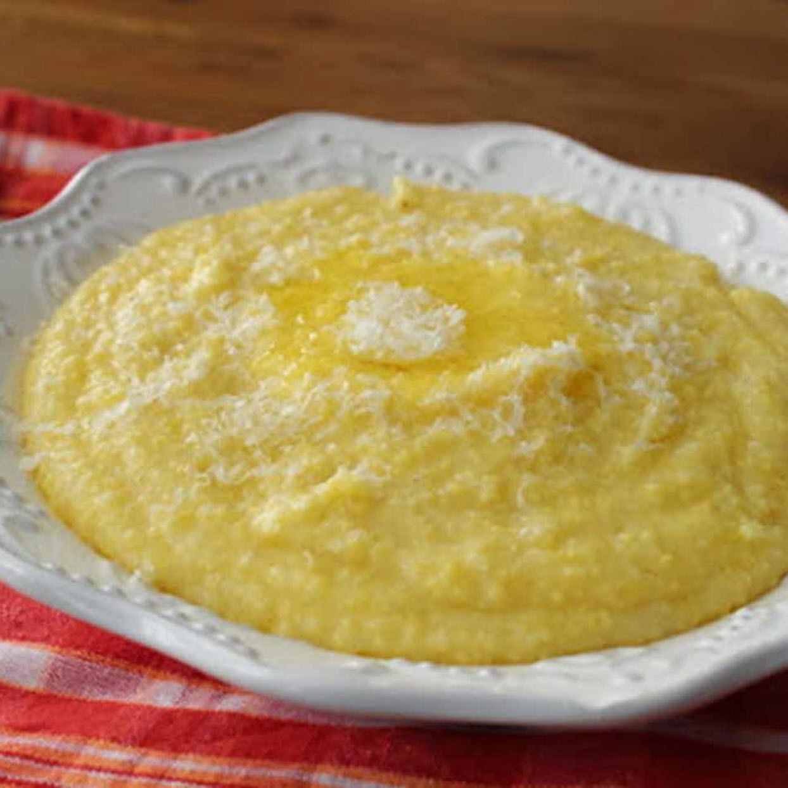

It's like cheesy rice thats been stomped on.
- 4 cups of water for every cup of polenta
- Salt
- Polenta
- Three tablespoons of butter
- Freshly grated Parmigiano-Reggiano cheese
Steps
- Add the polenta to salted boiling water
- Let simmer until the polenta is slightly thick
- Cover and continue cooking until the polenta is very thick
- Stir in the butter and cheese